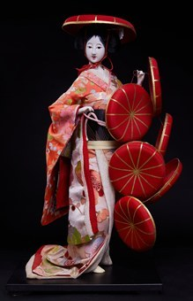

Shichimaigasa (Bảy dù che) là tên của một loại búp bê truyền thống Nhật Bản tái hiện hình ảnh Hanako (花子) – nữ vũ công Shirabyōshi trong vở múa Kabuki nổi tiếng Musume Doujouji (娘道成寺 – Thiếu nữ chùa Doujouji).
Trong điệu múa, Hanako đội một chiếc nón sơn đỏ trên đầu và cầm hai chồng nón, mỗi chồng ba chiếc, tổng cộng bảy chiếc nón. Động tác múa cùng bảy chiếc nón tạo nên một màn trình diễn rực rỡ, uyển chuyển và là một trong những phân cảnh nổi tiếng nhất của nghệ thuật múa Kabuki.
Búp bê Shichimaigasa thường được chế tác dưới nhiều hình thức như búp bê mặc trang phục truyền thống (衣裳着人形), búp bê trưng bày trong tủ kính, hoặc búp bê kimono ghép gỗ (木目込み人形 – Kimekomi Ningyou).
Điểm nổi bật của búp bê là trang phục lộng lẫy, dáng múa thanh thoát và khả năng tái hiện một khoảnh khắc đẹp trong nghệ thuật sân khấu truyền thống Nhật Bản, thể hiện vẻ đẹp tinh tế của văn hóa Kabuki.
七枚笠は、有名な歌舞伎舞踊『娘道成寺』に登場する白拍子の踊り手・花子の姿を表した日本の伝統人形です。
この舞の中で花子は、赤く塗られた笠を頭にかぶり、3枚ずつ重ねた笠を両手に持ち、合わせて7枚の笠を使って踊ります。7枚の笠を操る舞は華やかでしなやかな見せ場となっており、歌舞伎舞踊の中でも特に有名な場面のひとつです。
七枚笠の人形は、衣裳着人形、ケース入りの飾り人形、木目込み人形など、さまざまな形で作られています。
豪華な衣装、軽やかな舞姿、そして日本の伝統的な舞台芸術の美しい一瞬を再現している点が見どころで、歌舞伎文化の繊細な美しさを表しています。